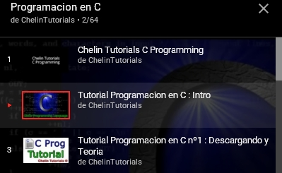

Curso de C

C es un lenguaje de programación originalmente desarrollado por Dennis M. Ritchie entre 1969 y 1972 en los Laboratorios Bell, como evolución del anterior lenguaje B, a su vez basado en BCPL. La primera estandarización del lenguaje C fue en ANSI, con el estándar X3.159-1989.
Para acceder a los demás videos
1- Dar Clic en el icono de lista de reproducción
2- Seleccionar el video de la lista
